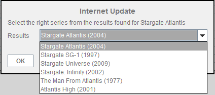

| Internet Update |
|---|
|
Internet Update updates all series episodes information from
http://www.tvrage.com or http://www.epguides.com. If using tvrage you must provide the series ID in the [Series Administration] panel. The series ID can be obtained by searching tvRage series the first time you try to update a series or when you add a new series in the application. |
| Searching will provide some results from which you must choose the right one |
|  |
| Also if your computer is behind a proxy server you have to provide the proxy address, port in [Internet Options]. |